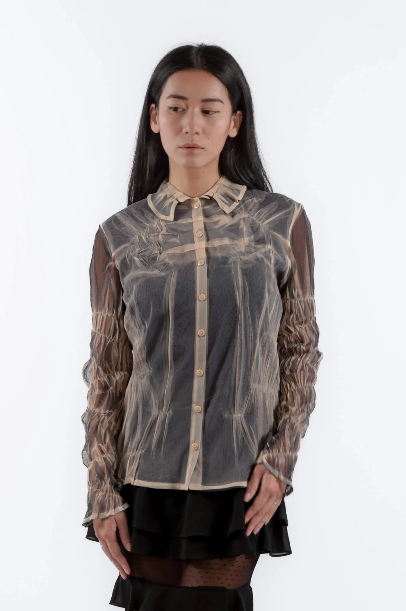
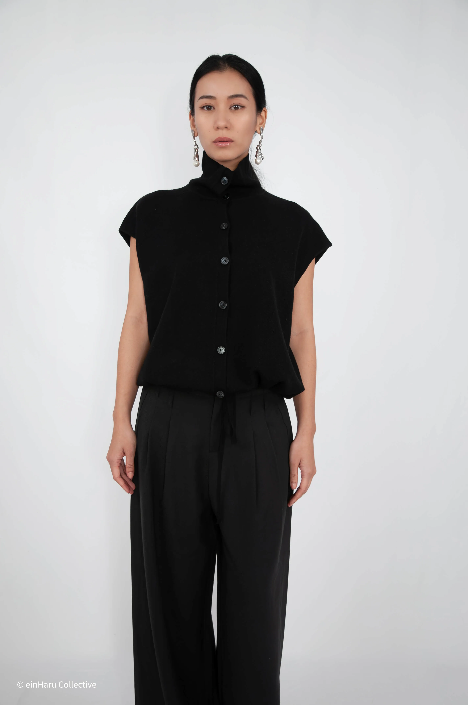
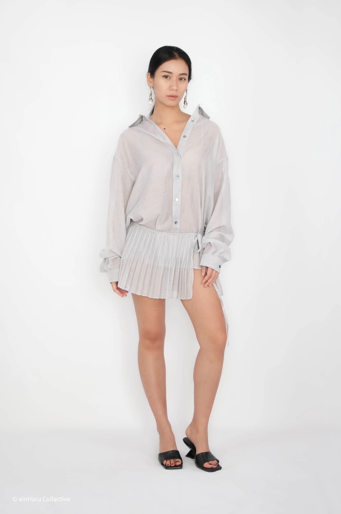
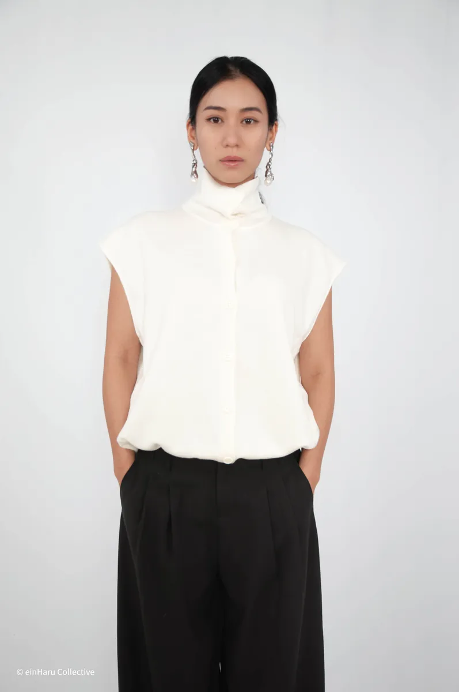

Japanese vs Korean Minimalism: What's the Difference?
Both aesthetics share restraint, quality of fabrication, and a resistance to trend cycles. But they diverge in important ways, and understanding the difference helps you build a wardrobe with a consistent point of view rather than a mixed one.
Japanese vs Korean minimalism: shared foundations, different philosophies, and why Korean minimalism tends to integrate more naturally into European wardrobes.

Where they diverge
Japanese minimalism tends toward the conceptual. The garment as object. Deconstruction. Deliberate incompleteness. Comme des Garçons, Issey Miyake, Yohji Yamamoto: these are designers asking philosophical questions through clothing. The results are often unwearable in daily life unless you commit entirely to the aesthetic.
Korean minimalism is more pragmatic. The pieces are designed to be worn on the street, in the office, in daily life, while still carrying architectural quality. The proportion is interesting but the garment is functional. A wrap neckline that adds visual interest. A stand collar that frames without a lapel's formality. A hem tie that adjusts volume without requiring effort.

Wearability in a European context
For European wardrobes specifically, Korean minimalism integrates more naturally. The pieces work alongside existing Western basics: a Korean minimalist shirt over straight trousers, a wrap top under a classic coat. The silhouettes are interesting but not extreme.
Japanese minimalism requires more commitment. A full Comme des Garçons or Yohji look demands other pieces that match its register. One piece styled with conventional Western basics tends to look mismatched rather than considered.
Which is right for your wardrobe
If you want to add considered design to a wardrobe that already exists: Korean minimalism. The pieces slot in. They add something without requiring you to rethink everything around them.
If you want to build a wardrobe entirely from scratch around a conceptual aesthetic, Japanese minimalism is worth exploring. But know that it requires total commitment to work properly.
Most European wardrobes benefit from Korean minimalism. The Seoul design scene is producing work that is genuinely interesting and genuinely wearable at the same time, which is a rarer combination than it sounds.
Korean minimalist pieces from einHaru

Shearling Wrap Oversized Shirt
A lightweight shirt with a separate shearling wrap panel. Wear both together or apart. The panel adds texture and changes the proportion entirely: Korean minimalism's pragmatic experimentalism in one garment.
View product
Stand Collar Hem Tie Top in Ivory
Stand collar, hem tie, sleeveless cut. Three considered details that shift a simple top into something designed. Made in Korea.
View productContinue reading: Korean Minimalist Fashion: A Guide for European Shoppers or What Is Quiet Luxury Fashion.